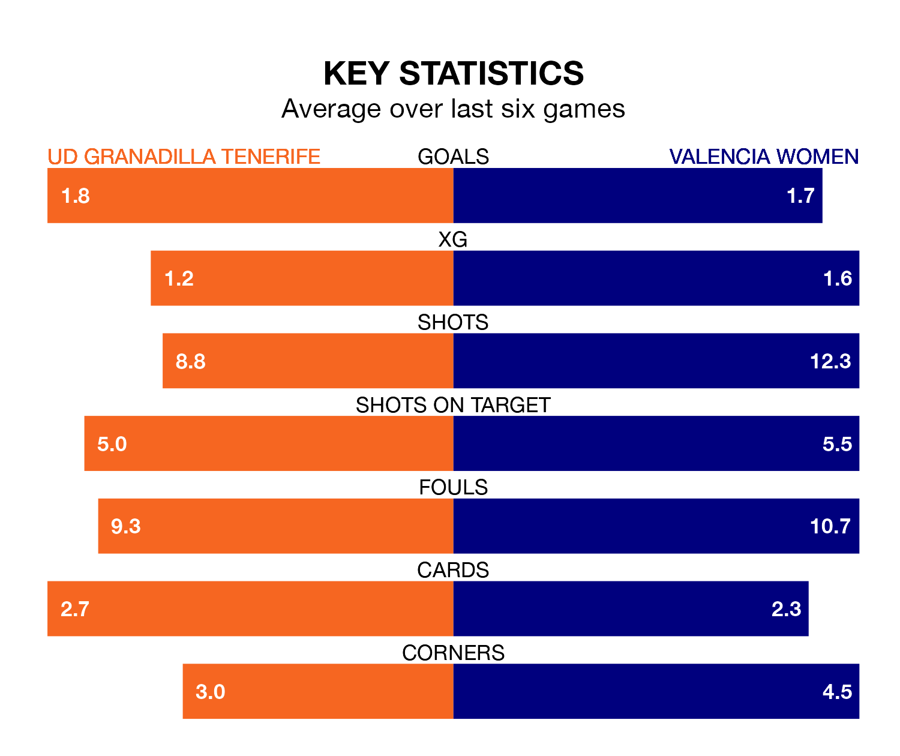

Valencia Women travel to UD Granadilla Tenerife on early Saturday in Liga F.
The visitors come into the game on the back of a win in their last match, having beaten Real Sociedad Women 3-0 at home, with two goals from Ana Marcos Moral and one from Ascensión Martínez Salinas.
Granadilla Tenerife, meanwhile, lost their last match, 2-1 against Granada Women, with their goal scored by Ange N'Guessan.
In the last 10 years, Granadilla Tenerife and Valencia have played each other on 17 occasions. Granadilla Tenerife won eight of them, Valencia four, and they drew five times.
On average, Granadilla Tenerife scored 1.3 goals and Valencia 1.1 in those matches.
Their last meeting was on January 27, when they played out a 1-1 draw.
With 31 goals in 24 games so far this season, Valencia are scoring at below the league average rate with 1.3 goals per game. And they are conceding more than average, letting in 48 goals at a rate of 2.0 per game.
Granadilla Tenerife are also below average scorers, with 1.3 goals per game, compared to a league average of 1.6. They have conceded 1.7 goals per game.
In Marcos Moral, the away side have one of the league's sharpest shooters so far this season. She has notched 11 goals in 24 appearances, to sit fifth in the scoring charts.
Her goal rate of one every 128 minutes is quicker than that of Jassina Blom, the hosts' top scorer with a goal every 235 minutes, and a total of six goals in 21 games.
Valencia are 10th in the table after 24 games, of which they have won seven and drawn five, earning 26 points.
Granadilla Tenerife are one place ahead of Valencia in ninth, with seven wins and seven draws putting them on 28 points.
Granadilla Tenerife are in mixed form in Liga F, with two wins and two draws from their last six games.
And also with two wins and two draws over that period, the visitors' form is identical – they have both taken eight points from 18.
Updated: 07:59 (UTC), 26/04/24